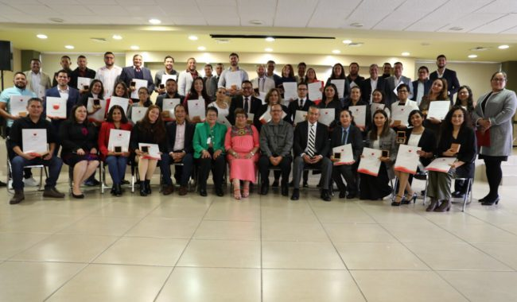

{kind=link}
ZACATECAS. El pasado 8 de marzo de 2024, en Zacatecas, autoridades educativas federales y estatales se enfrentaron a dificultades para la entrega de reconocimientos a 51 docentes zacatecanos destacados por sus contribuciones en la Convocatoria de Reconocimiento a la Práctica Educativa 2023. La situación se vio complicada debido a la veda electoral, lo que podría resultar en una sanción por parte del Tribunal Electoral si se hacían presentes en un acto público. Ante este desafío, la Secretaría de Educación Pública optó por disfrazar el evento como una cena baile organizada por el club de Leones. Sin embargo, la presencia de la prensa y de participantes de la marcha 8M alteró la organización, impidiendo incluso la presentación del evento. A pesar de estas circunstancias, Maribel Villalpando Haro, Secretaria de Educación de Zacatecas, expresó en nombre del Gobernador David Monreal Ávila su agradecimiento a las maestras y maestros por ser fundamentales en la cruzada por la educación en el estado, que busca la transformación social. Por su parte, Martha Velda Hernández Moreno, Subsecretaria de Educación Básica en representación de la Secretaría de Educación Pública, reconoció el valioso trabajo de las y los docentes en las aulas y comunidades, destacando su papel crucial en la transformación educativa del país. Villalpando Haro enfatizó que las y los docentes, al trabajar con pasión y determinación, son agentes de cambio y líderes en la formación de ciudadanos íntegros. Además, resaltó el papel de la escuela en el refuerzo de los valores inculcados en el hogar, gracias al trabajo diario de las maestras y maestros. El reconocimiento a estos docentes se otorga a través de la Unidad del Sistema para la Carrera de las Maestras y los Maestros (USICAMM), a aquellos que proponen prácticas educativas innovadoras que impactan en el aprendizaje de los estudiantes. En esta ocasión, 41 docentes de educación básica y 10 de educación media superior recibieron medallas de plata y diplomas, destacando 16 de ellos a nivel nacional. Los temas abordados por los docentes incluyeron estrategias didácticas, materiales educativos, tecnología para la enseñanza y el aprendizaje, así como trabajo comunitario. Durante la entrega de reconocimientos, estuvieron presentes diversas autoridades educativas, entre ellas Rafael González Salinas, Bernardo Candelas de la Torre, Sergio Saldívar Montalvo y José Alfredo Sánchez Mendoza. .
